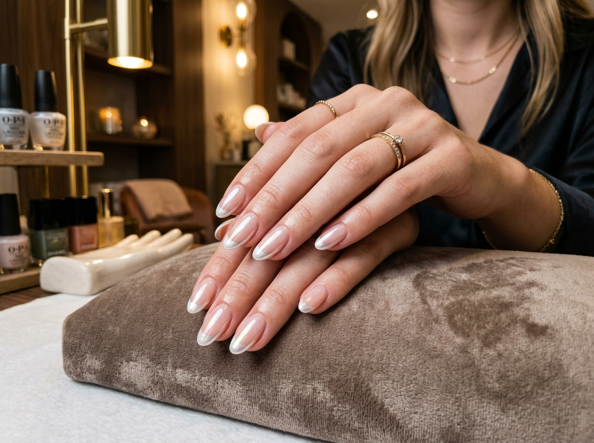
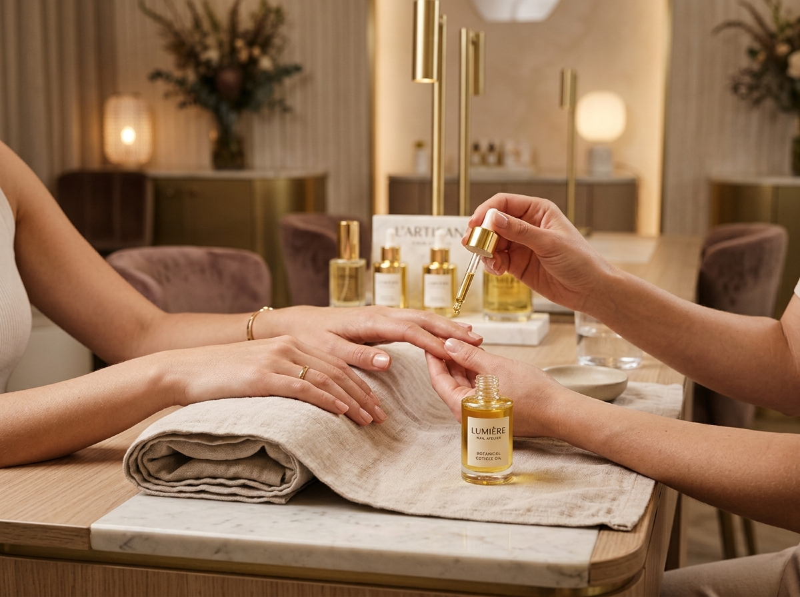

Kusursuz bir seansın üç adımı, tek bir ışıltıda buluşuyor.
Özel tasarım, profesyonel protez uygulaması ve besleyici bakım — Aurum Atelier'de her randevunun değişmeyen kalite standardı.



Cilt tonunuza, tarzınıza ve trendlere uygun özgün nail art tasarımları — her tırnakta eşsiz bir el işçiliği.
Yüksek standartta jel ve protez tırnak uygulamasıyla 4 haftaya kadar süren kusursuz parlaklık ve dayanıklılık.
Özel tasarım, profesyonel protez uygulaması ve besleyici bakım — Aurum Atelier'de her randevunun değişmeyen kalite standardı.


En yüksek kalite Avrupa standartlarında malzemeler ve uzman artist dokunuşlarıyla hazırlanan bakım ve tasarım menümüz.
Özel form ve tips tekniğiyle kişiselleştirilmiş uzunluk ve form oluşturma. Kırılmayan, doğal görünümlü jel mimarisi.
Doğal tırnak plağını soymadan, kırılgan tırnakları güçlendirip 30 güne kadar ayna parlaklığında kalıcı renk sunumu.
Mikro fırça el çizimleri, 3D taş ve inciler, krom yansımalar ve mevsime özel koleksiyon illüstrasyonları.
Kuru/kombine manikür, organik şeker peelingi, sıcak havlu kompresi ve yoğun kolajen el maskesi terapisi.
Uzayan protez tırnakların dipten yenilenmesi, form ve apeks dengesinin yeniden oluşturulması ve taze kalıcı oje.
Gelinlik veya konseptinize özel protez tırnak, el-ayak kombine spa bakımı, özel taş tasarımı ve ikramlar.
Sağlığınız ve tırnak bütünlüğünüz bizim için birinci önceliktir. Atelier'mizde cerrahi hassasiyette hijyen uygulanır.
Tüm metal aletler her seans öncesinde ultrasonik banyodan geçirilip hastane standartlarında otoklav ile sterilize edilir ve gözünüzün önünde açılır.
Törpü, buffer, portakal çubuğu ve kütikül iticiler yalnızca size özel tek kullanımlık steril paketlerde kullanılır ve seans sonunda imha edilir.
Alerjen madde içermeyen, tırnak yatağını sarartmayan ve inceltmeyen premium sertifikalı Avrupa jel markaları kullanılır.
Tırnak yapınıza, parmak uzunluğunuza ve yaşam tarzınıza en uygun tırnak formu (Badem, Balerin, Kare, Oval) uzmanımızca analiz edilir.
Sıra beklemeden, dilediğiniz gün ve saatte yerinizi ayırtın. Seçtiğiniz hizmet ve uzman için anında onay alın.
Özel tasarım veya acil randevu talepleri için bize doğrudan ulaşabilirsiniz:
Her detayda konfor ve kusursuz işçilik arayanların tercihi.
"Tırnaklarım çok ince ve kırılgandı, jel güçlendirme sonrası 4 hafta boyunca tek bir soyulma bile yaşamadım. Titizlik ve hijyen seviyesi inanılmaz."
"Düğünüm için protez tırnak ve nail art yaptırdım. Tam hayal ettiğim zarif altın detayları uyguladılar. Fotoğraflarda harika görünüyordu!"
"Sterilizasyon poşetinin gözümün önünde açılması ve tek kullanımlık törpüler büyük güven verdi. Sanatsal çizimleri ise şehirdeki en iyisi."
Uygulamalarımız ve seans süreci hakkında en çok merak edilen detaylar.
Doğal tırnak uzama hızına bağlı olarak uygulamalarımız 3 ila 5 hafta boyunca kusursuz parlaklık ve dayanıklılıkla kalır. Tırnak sağlığınız için 3-4 haftada bir dolgu ve bakım önerilmektedir.
Hayır. Zarar veren şey jel veya protez değil, hatalı törpüleme ve koparma işlemleridir. Kullandığımız HEMA-Free Avrupa jel ürünleri ve nazik çıkarma teknikleri tırnak plağınızı korur.
Kesinlikle! Beğendiğiniz herhangi bir referans fotoğrafı veya hayalinizdeki deseni sanatçılarımıza gösterebilirsiniz; el anatominize ve renk tonunuza göre birebir uyarlanır.
Randevu saatinize en geç 24 saat kala telefon veya WhatsApp üzerinden bize bildirerek ücretsiz olarak tarih ve saat değişikliği yapabilirsiniz.
Kültür Mah. Atatürk Bulvarı No: 48/A
Merkez / Düzce
Pazartesi – Cumartesi: 09:30 – 20:00
Pazar: Kapalı (Özel Randevular Hariç)
Tel: +90 (555) 000 00 00
E-Posta: info@aurumnailatelier.com